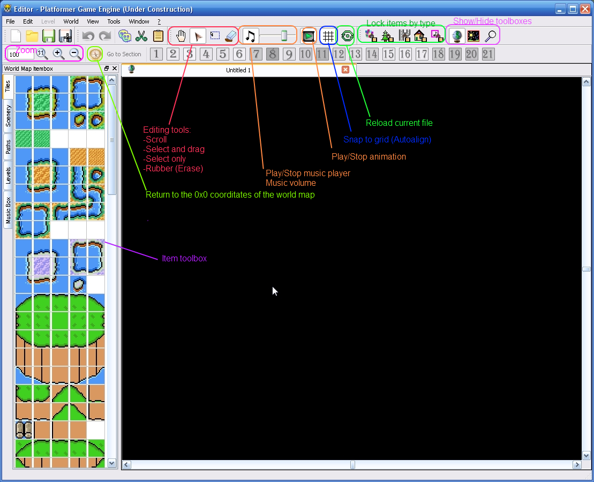

World map - the interactive list of levels which available to player(s) for play. World map - is a key unit of game or episode.
World map also can be a hub-styled, I.e. world map will not be used. Instead world map you will use the special level, which called as hub. The hub giving to player enter to levels like it going between levels.
Tiles - the main design unit which using for creating of design of the level map. Tiles isn't communicating with other items.
Sceneries - the secondary design unit. Sceneries can be hidden when did opened a path which placed over them.
Paths - allow to player move between level points and map locations. Usually paths are hidden and appearing when player pass the level which placed nearly to them.
Level entrances - The special units, which allowing to enter into defined level or teleport player to other map coorditates. Levels can have multiple entrances, but can have difference warp points inside a level. Also level point using as game start point. If point is not defined, player will start from 0x0 coordinates.
Music Boxes - The special units which switching playing music when player character stand on them.
World map editor interface

Each world map should have:
Copyright © 2014-2015 Platformer Game Engine by Wohlstand project. All rights reserved.